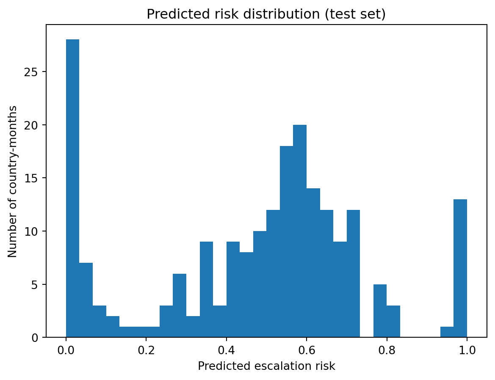
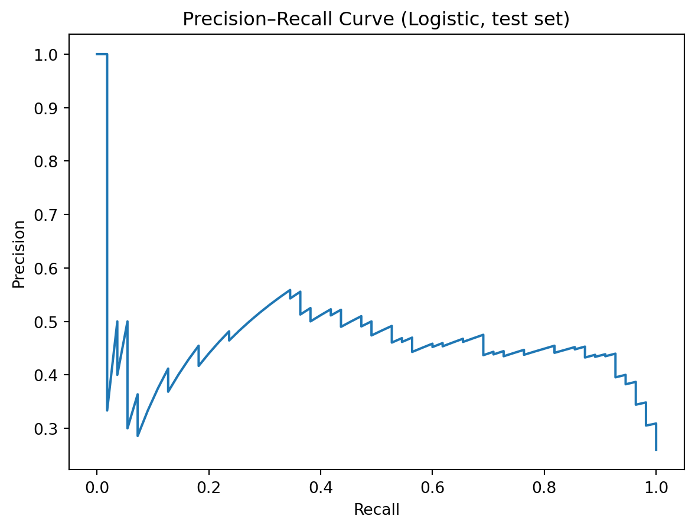
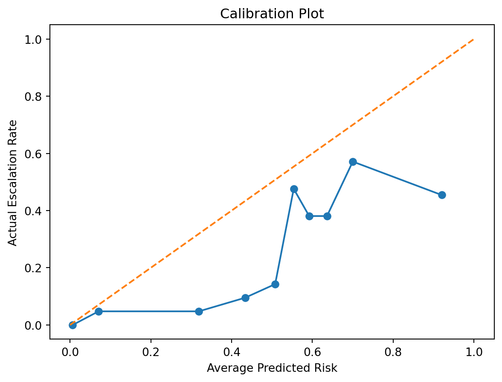
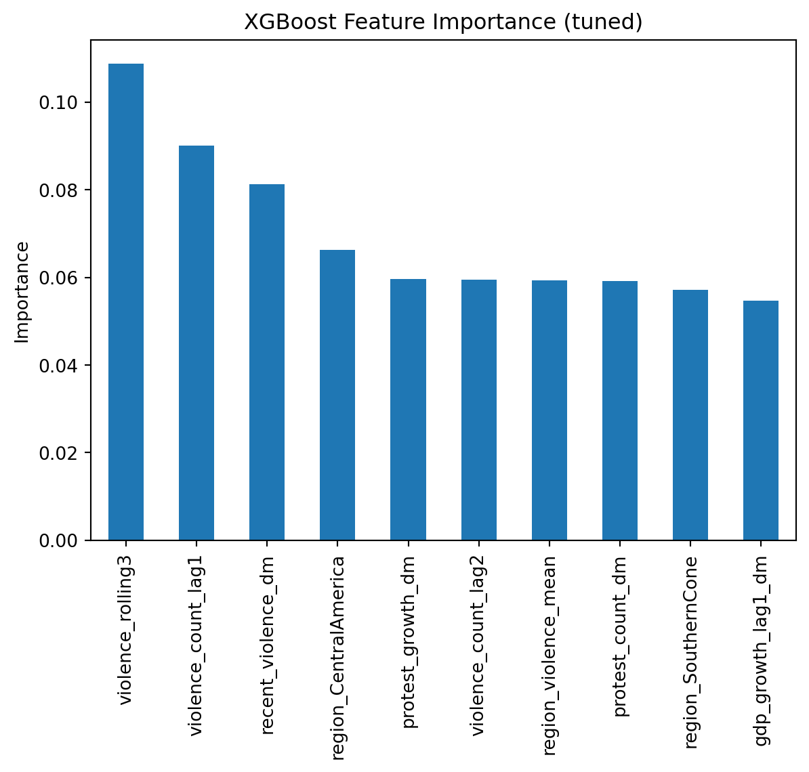
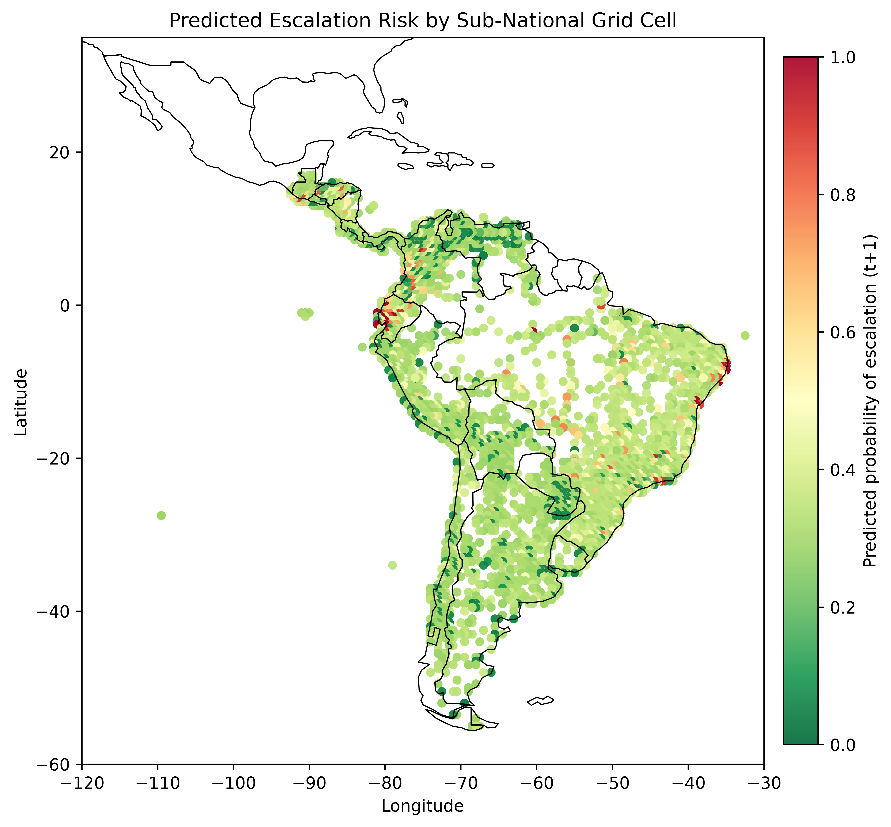

# 1) Setup
import numpy as np
import pandas as pd
import statsmodels.api as sm
import statsmodels.formula.api as smf
import geopandas as gpd
import matplotlib.pyplot as plt
from sklearn.metrics import roc_auc_score, average_precision_score
import matplotlib.pyplot as plt
from sklearn.metrics import precision_recall_curve
from sklearn.linear_model import LogisticRegression
from xgboost import XGBClassifier
from sklearn.metrics import roc_auc_score
from matplotlib.colors import Normalizemodeling
# 2) Load Dataset and define analysis sample
df = pd.read_csv("../data/mergedcleaned.csv")
df["year_month"] = pd.PeriodIndex(df["year_month"], freq="M")
df["year"] = df["year_month"].dt.year
df = df.sort_values(["country", "year_month"]).copy()
# Fill key series before creating lags/rolling
df["violence_count"] = df["violence_count"].fillna(0)
df["violence_any"] = df["violence_any"].fillna(0)
# ------------------------------
# TEMPORAL DEPENDENCE FEATURES
# ------------------------------
df["violence_count_lag1"] = df.groupby("country")["violence_count"].shift(1)
df["violence_count_lag2"] = df.groupby("country")["violence_count"].shift(2)
df["violence_rolling3"] = (
df.groupby("country")["violence_count"]
.rolling(window=3, min_periods=1)
.mean()
.reset_index(level=0, drop=True)
)
# ------------------------------
# GEOSPATIAL FEATURES
# ------------------------------
region_map = {
# Southern Cone
"Argentina": "SouthernCone",
"Chile": "SouthernCone",
"Uruguay": "SouthernCone",
"Paraguay": "SouthernCone",
# Andean
"Colombia": "Andean",
"Peru": "Andean",
"Ecuador": "Andean",
"Bolivia": "Andean",
"Venezuela": "Andean",
# Brazil (large & distinct)
"Brazil": "Brazil",
# Central America (Northern Triangle + neighbors)
"Guatemala": "CentralAmerica",
"Honduras": "CentralAmerica",
"El Salvador": "CentralAmerica",
"Nicaragua": "CentralAmerica",
"Costa Rica": "CentralAmerica",
"Panama": "CentralAmerica"
}
df["region"] = df["country"].map(region_map).fillna("Other")
df["region_violence_mean"] = (
df.groupby(["region", "year_month"])["violence_count"]
.transform("mean")
)
# Only drop rows missing essential panel keys (NOT everything)
df = df.dropna(subset=["country", "year_month"]).copy()
print("After feature engineering:", df.shape)
print(df["region"].value_counts().head(10))After feature engineering: (1344, 33)
region
CentralAmerica 490
Andean 427
SouthernCone 341
Brazil 86
Name: count, dtype: int64# 3) Define predictors and outcome
# Restrict to protest months (your project framing)
df = df[df["protest_count"] > 0].copy()
# Define escalation as "violence turns on next month" (transition)
# (If you instead want "any violence next month", tell me and we’ll adjust.)
df["violence_count_t1"] = df["violence_count_t1"].fillna(0)
df["escalation"] = (
((df["violence_count"] == 0) & (df["violence_count_t1"] > 0)) |
(df["violence_count_t1"] >= 1.5 * df["violence_count"])
).astype(int)
y_name = "escalation"
base_features = [
"protest_count",
"protest_growth",
"recent_violence",
"democracy_index",
"protest_acceleration",
"gdp_growth_lag1",
"inflation_lag1",
"unemployment_lag1"
]
macro_cols = ["gdp_growth_lag1", "inflation_lag1", "unemployment_lag1", "democracy_index"]
extra_features = [
"violence_count_lag1",
"violence_count_lag2",
"violence_rolling3",
"region_violence_mean"
]
# IMPORTANT: do NOT dropna on everything; macro can be missing and you already have _missing flags
core_needed = [
"country", "year_month", y_name, "protest_count", "violence_any", "violence_count_t1",
"violence_count_lag1", "violence_count_lag2", "violence_rolling3", "region_violence_mean", "region"
]
len_before = len(df)
df = df.dropna(subset=core_needed).copy()
print("Rows before/after:", len_before, "->", len(df))
print("Outcome rate:", y_name, "=", round(df[y_name].mean() * 100, 2), "%")Rows before/after: 1344 -> 1312
Outcome rate: escalation = 26.91 %# 4) Split & Demean (train 2015–2022, validate 2023, test 2024–2025)
train = df[(df["year_month"] >= pd.Period("2015-01", freq="M")) &
(df["year_month"] <= pd.Period("2022-12", freq="M"))].copy()
valid = df[(df["year_month"] >= pd.Period("2023-01", freq="M")) &
(df["year_month"] <= pd.Period("2023-12", freq="M"))].copy()
test = df[(df["year_month"] >= pd.Period("2024-01", freq="M")) &
(df["year_month"] <= pd.Period("2025-12", freq="M"))].copy()
# Ensure valid/test countries are seen in train (important for C(country))
train_countries = set(train["country"])
valid = valid[valid["country"].isin(train_countries)].copy()
test = test[test["country"].isin(train_countries)].copy()
# ------------------------------
# One-hot encode region (safe)
# ------------------------------
if "region" in train.columns:
train = pd.get_dummies(train, columns=["region"], drop_first=True)
valid = pd.get_dummies(valid, columns=["region"], drop_first=True)
test = pd.get_dummies(test, columns=["region"], drop_first=True)
region_dummies = [c for c in train.columns if c.startswith("region_")]
# Ensure valid/test have same dummy columns as train
for c in region_dummies:
if c not in valid.columns:
valid[c] = 0
if c not in test.columns:
test[c] = 0
else:
# region was already dummified earlier, or never created
region_dummies = [c for c in train.columns if c.startswith("region_")]
print("Region dummies:", region_dummies)
# Ensure valid/test have the same dummy columns as train
region_dummies = [
c for c in train.columns
if c.startswith("region_") and c != "region_violence_mean"
]
for c in region_dummies:
if c not in valid.columns:
valid[c] = 0
if c not in test.columns:
test[c] = 0
features = (
[c + "_dm" for c in base_features] +
[c + "_missing" for c in macro_cols] +
extra_features +
region_dummies
)
# Missingness indicators for macro variables (created BEFORE demeaning)
for col in macro_cols:
train[col + "_missing"] = train[col].isna().astype(int)
valid[col + "_missing"] = valid[col].isna().astype(int)
test[col + "_missing"] = test[col].isna().astype(int)
# Demean using TRAIN means
train_means = train.groupby("country")[base_features].mean()
def apply_demean(split_df, means_df, cols):
out = split_df.copy()
for c in cols:
out[c + "_dm"] = out[c] - out["country"].map(means_df[c])
return out
train = apply_demean(train, train_means, base_features)
valid = apply_demean(valid, train_means, base_features)
test = apply_demean(test, train_means, base_features)
# Fill missing macro demeaned values with 0 (paired with missing indicators)
for col in macro_cols:
train[col + "_dm"] = train[col + "_dm"].fillna(0)
valid[col + "_dm"] = valid[col + "_dm"].fillna(0)
test[col + "_dm"] = test[col + "_dm"].fillna(0)
# ADD temporal + geospatial features
# (These should already exist as columns from your feature engineering step)
extra_features = [
"violence_count_lag1",
"violence_count_lag2",
"violence_rolling3",
"region_violence_mean"
]
# Final feature list: demeaned base + missing indicators + extra + region dummies
features = (
[c + "_dm" for c in base_features] +
[c + "_missing" for c in macro_cols] +
extra_features +
region_dummies
)
train[region_dummies] = train[region_dummies].astype(int)
valid[region_dummies] = valid[region_dummies].astype(int)
test[region_dummies] = test[region_dummies].astype(int)
X_train, y_train = train[features], train[y_name]
X_valid, y_valid = valid[features], valid[y_name]
X_test, y_test = test[features], test[y_name]
print("Train years:", train["year"].min(), "-", train["year"].max(), "| rows:", len(train), "| transitions:", int(y_train.sum()))
print("Valid years:", valid["year"].min(), "-", valid["year"].max(), "| rows:", len(valid), "| transitions:", int(y_valid.sum()))
print("Test years :", test["year"].min(), "-", test["year"].max(), "| rows:", len(test), "| transitions:", int(y_test.sum()))
print("Train transition rate:", round(y_train.mean()*100, 2), "%")
print("Valid transition rate:", round(y_valid.mean()*100, 2), "%")
print("Test transition rate:", round(y_test.mean()*100, 2), "%")Region dummies: ['region_violence_mean', 'region_Brazil', 'region_CentralAmerica', 'region_SouthernCone']
Train years: 2018 - 2022 | rows: 916 | transitions: 252
Valid years: 2023 - 2023 | rows: 184 | transitions: 46
Test years : 2024 - 2025 | rows: 212 | transitions: 55
Train transition rate: 27.51 %
Valid transition rate: 25.0 %
Test transition rate: 25.94 %# 5) baseline
baseline_features = ["recent_violence_dm"]
X_train_base = train[baseline_features]
X_valid_base = valid[baseline_features]
X_test_base = test[baseline_features]
baseline_model = LogisticRegression(
solver="liblinear",
class_weight="balanced",
max_iter=5000
)
baseline_model.fit(X_train_base, y_train)
baseline_test_proba = baseline_model.predict_proba(X_test_base)[:,1]
print("Baseline TEST ROC AUC:",
round(roc_auc_score(y_test, baseline_test_proba),3))Baseline TEST ROC AUC: 0.585# 6) Hyperparameter tuning for logistic regression (C parameter)
C_grid = [0.01, 0.1, 1, 5, 10, 50]
best_auc = -1
best_C = C_grid[0]
for C_val in C_grid:
temp_model = LogisticRegression(
solver="liblinear",
class_weight="balanced",
max_iter=5000,
C=C_val
)
temp_model.fit(X_train, y_train)
val_proba = temp_model.predict_proba(X_valid)[:, 1]
val_auc = roc_auc_score(y_valid, val_proba)
print(f"C={C_val} | Validation AUC={val_auc:.3f}")
if val_auc > best_auc:
best_auc = val_auc
best_C = C_val
print("\nBest C:", best_C, "| Best VALID AUC:", round(best_auc, 3))C=0.01 | Validation AUC=0.759
C=0.1 | Validation AUC=0.783
C=1 | Validation AUC=0.774
C=5 | Validation AUC=0.775
C=10 | Validation AUC=0.775
C=50 | Validation AUC=0.778
Best C: 0.1 | Best VALID AUC: 0.783# 7) Fit final escalation model using best_C
clf = LogisticRegression(
solver="liblinear",
class_weight="balanced",
max_iter=5000,
C=best_C
)
clf.fit(X_train, y_train)
logit_test_proba = clf.predict_proba(X_test)[:, 1]
print("LOGIT TEST ROC AUC:",
round(roc_auc_score(y_test, logit_test_proba), 3))
print("LOGIT TEST PR AUC:",
round(average_precision_score(y_test, logit_test_proba), 3))LOGIT TEST ROC AUC: 0.778
LOGIT TEST PR AUC: 0.469# 8) Inference-focused logistic regression with clustered SEs
if "region" in train.columns:
formula = (
"escalation ~ violence_count_lag1 + violence_count_lag2 + violence_rolling3 "
"+ protest_count + democracy_index + region_violence_mean + C(region)"
)
else:
# region already one-hot encoded; include ONLY the dummy columns (not region_violence_mean)
region_terms = " + ".join([
c for c in train.columns
if c.startswith("region_") and c != "region_violence_mean"
])
formula = (
"escalation ~ violence_count_lag1 + violence_count_lag2 + violence_rolling3 "
"+ protest_count + democracy_index + region_violence_mean"
)
if region_terms:
formula = formula + " + " + region_terms
logit_inference = smf.logit(formula, data=train).fit(
cov_type="cluster",
cov_kwds={"groups": train["country"]}
)
print(formula)
print(logit_inference.summary())Optimization terminated successfully.
Current function value: 0.485944
Iterations 9
escalation ~ violence_count_lag1 + violence_count_lag2 + violence_rolling3 + protest_count + democracy_index + region_violence_mean + region_Brazil + region_CentralAmerica + region_SouthernCone
Logit Regression Results
==============================================================================
Dep. Variable: escalation No. Observations: 916
Model: Logit Df Residuals: 906
Method: MLE Df Model: 9
Date: Sun, 05 Apr 2026 Pseudo R-squ.: 0.1740
Time: 21:39:51 Log-Likelihood: -445.12
converged: True LL-Null: -538.86
Covariance Type: cluster LLR p-value: 1.393e-35
=========================================================================================
coef std err z P>|z| [0.025 0.975]
-----------------------------------------------------------------------------------------
Intercept -0.6186 0.493 -1.256 0.209 -1.584 0.347
violence_count_lag1 0.0498 0.018 2.839 0.005 0.015 0.084
violence_count_lag2 0.0560 0.022 2.541 0.011 0.013 0.099
violence_rolling3 -0.1399 0.054 -2.609 0.009 -0.245 -0.035
protest_count -0.0038 0.002 -2.356 0.018 -0.007 -0.001
democracy_index 0.1667 0.074 2.256 0.024 0.022 0.312
region_violence_mean -0.0052 0.005 -1.048 0.295 -0.015 0.004
region_Brazil 7.0481 2.804 2.514 0.012 1.553 12.544
region_CentralAmerica -0.5194 0.312 -1.667 0.095 -1.130 0.091
region_SouthernCone -0.4029 0.296 -1.363 0.173 -0.982 0.176
=========================================================================================# 9) Default XGBoost (baseline)
xgb = XGBClassifier(
n_estimators=300,
max_depth=3,
learning_rate=0.05,
subsample=0.8,
colsample_bytree=0.8,
eval_metric="logloss",
random_state=42
)
xgb.fit(X_train, y_train)
xgb_test_proba_default = xgb.predict_proba(X_test)[:, 1]
print("XGB (default) TEST ROC AUC:",
round(roc_auc_score(y_test, xgb_test_proba_default), 3))
print("XGB (default) TEST PR AUC:",
round(average_precision_score(y_test, xgb_test_proba_default), 3))XGB (default) TEST ROC AUC: 0.828
XGB (default) TEST PR AUC: 0.705# 10) Tune XGBoost on VALID
param_grid = {
"max_depth": [2, 3, 4, 5],
"n_estimators": [200, 300, 400, 600],
"learning_rate": [0.03, 0.05, 0.1]
}
best_auc = -np.inf
best_params = None
for md in param_grid["max_depth"]:
for ne in param_grid["n_estimators"]:
for lr in param_grid["learning_rate"]:
model = XGBClassifier(
max_depth=md,
n_estimators=ne,
learning_rate=lr,
subsample=0.8,
colsample_bytree=0.8,
eval_metric="logloss",
random_state=42
)
model.fit(X_train, y_train)
valid_proba = model.predict_proba(X_valid)[:, 1]
auc = roc_auc_score(y_valid, valid_proba)
if auc > best_auc:
best_auc = auc
best_params = {"max_depth": md, "n_estimators": ne, "learning_rate": lr}
print("Best VALID ROC AUC:", round(best_auc, 3))
print("Best params:", best_params)Best VALID ROC AUC: 0.836
Best params: {'max_depth': 3, 'n_estimators': 600, 'learning_rate': 0.05}# 11) Fit final tuned XGBoost using best_params
assert best_params is not None
xgb_best = XGBClassifier(
**best_params,
subsample=0.8,
colsample_bytree=0.8,
eval_metric="logloss",
random_state=42
)
xgb_best.fit(X_train, y_train)
xgb_test_proba_tuned = xgb_best.predict_proba(X_test)[:, 1]
print("TUNED XGB TEST ROC AUC:",
round(roc_auc_score(y_test, xgb_test_proba_tuned), 3))
print("TUNED XGB TEST PR AUC:",
round(average_precision_score(y_test, xgb_test_proba_tuned), 3))TUNED XGB TEST ROC AUC: 0.833
TUNED XGB TEST PR AUC: 0.713# 12) Validation / Test performance
proba_valid = clf.predict_proba(X_valid)[:, 1]
proba_test = clf.predict_proba(X_test)[:, 1]
print("VALID ROC AUC:", round(roc_auc_score(y_valid, proba_valid), 3))
print("VALID PR AUC:", round(average_precision_score(y_valid, proba_valid), 3))
print("TEST ROC AUC:", round(roc_auc_score(y_test, proba_test), 3))
print("TEST PR AUC:", round(average_precision_score(y_test, proba_test), 3))VALID ROC AUC: 0.783
VALID PR AUC: 0.45
TEST ROC AUC: 0.778
TEST PR AUC: 0.469# 13) comparision of models
print("Logistic TEST ROC:", round(roc_auc_score(y_test, proba_test),3))
print("XGB (default) TEST ROC:", round(roc_auc_score(y_test, xgb_test_proba_default),3))
print("XGB (tuned) TEST ROC:", round(roc_auc_score(y_test, xgb_test_proba_tuned),3))
print("Baseline TEST ROC:", round(roc_auc_score(y_test, baseline_test_proba),3))Logistic TEST ROC: 0.778
XGB (default) TEST ROC: 0.828
XGB (tuned) TEST ROC: 0.833
Baseline TEST ROC: 0.585# 14) Visualization
# a: distribution of predicted risk
plt.hist(proba_test, bins=30)
plt.xlabel("Predicted escalation risk")
plt.ylabel("Number of country-months")
plt.title("Predicted risk distribution (test set)")
plt.show()
# 14b: Precision-recall curve
precision, recall, _ = precision_recall_curve(y_test, proba_test)
plt.plot(recall, precision)
plt.xlabel("Recall")
plt.ylabel("Precision")
plt.title("Precision–Recall Curve (Logistic, test set)")
plt.show()
# 14c) calibration plot
results = test.copy()
results["risk"] = proba_test
results["actual"] = y_test.values
results["risk_bin"] = pd.qcut(results["risk"], 10, duplicates="drop")
calibration = results.groupby("risk_bin").agg(
avg_predicted=("risk", "mean"),
actual_rate=("actual", "mean")
).reset_index()
plt.plot(calibration["avg_predicted"],
calibration["actual_rate"],
marker="o")
plt.plot([0,1],[0,1], linestyle="--")
plt.xlabel("Average Predicted Risk")
plt.ylabel("Actual Escalation Rate")
plt.title("Calibration Plot")
plt.show()
# 15) False positive analysis
cutoff = np.quantile(results["risk"], 0.90) # top 10%
false_positives = results[(results["risk"] >= cutoff) & (results["actual"] == 0)] \
.sort_values("risk", ascending=False)
print("Cutoff used:", cutoff)
false_positives.head(20)Cutoff used: 0.7666608927845897| country | year_month | protest_count | protest_any | violence_count | violence_any | fatalities | protest_days | violence_any_t1 | violence_count_t1 | ... | unemployment_lag1_missing | democracy_index_missing | democracy_index_dm | protest_acceleration_dm | gdp_growth_lag1_dm | inflation_lag1_dm | unemployment_lag1_dm | risk | actual | risk_bin | |
|---|---|---|---|---|---|---|---|---|---|---|---|---|---|---|---|---|---|---|---|---|---|
| 84 | Argentina | 2025-01 | 66 | 1 | 4 | 1 | 0 | 24 | 1.0 | 4.0 | ... | 0 | 1 | 0.000000 | 20.224138 | -1.686421 | 169.858737 | -2.104397 | 0.999215 | 0 | (0.767, 0.999] |
| 78 | Argentina | 2024-07 | 84 | 1 | 9 | 1 | 0 | 28 | 1.0 | 3.0 | ... | 0 | 0 | -0.416897 | 42.224138 | -1.686421 | 169.858737 | -2.104397 | 0.999003 | 0 | (0.767, 0.999] |
| 83 | Argentina | 2024-12 | 83 | 1 | 9 | 1 | 0 | 27 | 1.0 | 4.0 | ... | 0 | 0 | -0.416897 | 143.224138 | -1.686421 | 169.858737 | -2.104397 | 0.998685 | 0 | (0.767, 0.999] |
| 74 | Argentina | 2024-03 | 139 | 1 | 4 | 1 | 0 | 25 | 1.0 | 4.0 | ... | 0 | 0 | -0.416897 | 50.224138 | -1.686421 | 169.858737 | -2.104397 | 0.998654 | 0 | (0.767, 0.999] |
| 77 | Argentina | 2024-06 | 97 | 1 | 8 | 1 | 0 | 25 | 1.0 | 9.0 | ... | 0 | 0 | -0.416897 | -85.775862 | -1.686421 | 169.858737 | -2.104397 | 0.998531 | 0 | (0.767, 0.999] |
| 73 | Argentina | 2024-02 | 120 | 1 | 6 | 1 | 0 | 22 | 1.0 | 4.0 | ... | 0 | 0 | -0.416897 | -44.775862 | -1.686421 | 169.858737 | -2.104397 | 0.998367 | 0 | (0.767, 0.999] |
| 76 | Argentina | 2024-05 | 151 | 1 | 16 | 1 | 3 | 26 | 1.0 | 8.0 | ... | 0 | 0 | -0.416897 | 55.224138 | -1.686421 | 169.858737 | -2.104397 | 0.997442 | 0 | (0.767, 0.999] |
| 81 | Argentina | 2024-10 | 297 | 1 | 16 | 1 | 0 | 28 | 1.0 | 5.0 | ... | 0 | 0 | -0.416897 | 196.224138 | -1.686421 | 169.858737 | -2.104397 | 0.996044 | 0 | (0.767, 0.999] |
| 72 | Argentina | 2024-01 | 150 | 1 | 5 | 1 | 0 | 28 | 1.0 | 6.0 | ... | 0 | 0 | -0.416897 | 3.224138 | -2.199278 | 83.463744 | -3.115397 | 0.974077 | 0 | (0.767, 0.999] |
| 257 | Brazil | 2025-02 | 53 | 1 | 213 | 1 | 185 | 16 | NaN | 0.0 | ... | 1 | 1 | 0.000000 | 5.051724 | 0.000000 | 0.000000 | 0.000000 | 0.947656 | 0 | (0.767, 0.999] |
| 1343 | Venezuela | 2025-02 | 24 | 1 | 3 | 1 | 2 | 9 | NaN | 0.0 | ... | 1 | 1 | 0.000000 | -168.637931 | 0.000000 | 0.000000 | 0.000000 | 0.795532 | 0 | (0.767, 0.999] |
| 1339 | Venezuela | 2024-10 | 100 | 1 | 10 | 1 | 7 | 28 | 1.0 | 12.0 | ... | 1 | 0 | -0.359655 | 184.362069 | 0.000000 | 0.000000 | 0.000000 | 0.790798 | 0 | (0.767, 0.999] |
12 rows × 47 columns
# 16) Feature importance for xgboost
importance = pd.Series(
xgb_best.feature_importances_,
index=X_train.columns
).sort_values(ascending=False)
importance.head(10).plot(kind="bar")
plt.title("XGBoost Feature Importance (tuned)")
plt.ylabel("Importance")
plt.show()
# 17): save outputs
results.to_csv("../output/forecast_results_2015_2025.csv", index=False)# 18) Sub-national risk (country)
# Year FE
if "year" not in train.columns:
train["year"] = train["year_month"].dt.year
# Base formula pieces (temporal + core covariates + regional spillover)
base = (
"escalation ~ "
"violence_count_lag1 + violence_count_lag2 + violence_rolling3 "
"+ protest_count + democracy_index + region_violence_mean"
)
# Add region controls (either C(region) or one-hot region_* dummies)
if "region" in train.columns:
# Region fixed effects
region_part = " + C(region)"
else:
# Region already one-hot encoded as region_* columns; exclude region_violence_mean
region_terms = " + ".join([
c for c in train.columns
if c.startswith("region_") and c != "region_violence_mean"
])
region_part = (" + " + region_terms) if region_terms else ""
# Add time fixed effects - Year FE
time_part = " + C(year)"
# Final formula
formula = base + region_part + time_part
print("FORMULA:\n", formula)
# Fit with country-clustered SEs (handles temporal dependence within country)
logit_inference = smf.logit(formula, data=train).fit(
cov_type="cluster",
cov_kwds={"groups": train["country"]}
)
print(logit_inference.summary())FORMULA:
escalation ~ violence_count_lag1 + violence_count_lag2 + violence_rolling3 + protest_count + democracy_index + region_violence_mean + region_Brazil + region_CentralAmerica + region_SouthernCone + C(year)
Optimization terminated successfully.
Current function value: 0.484621
Iterations 9
Logit Regression Results
==============================================================================
Dep. Variable: escalation No. Observations: 916
Model: Logit Df Residuals: 902
Method: MLE Df Model: 13
Date: Sun, 05 Apr 2026 Pseudo R-squ.: 0.1762
Time: 21:40:24 Log-Likelihood: -443.91
converged: True LL-Null: -538.86
Covariance Type: cluster LLR p-value: 1.613e-33
=========================================================================================
coef std err z P>|z| [0.025 0.975]
-----------------------------------------------------------------------------------------
Intercept -0.6147 0.600 -1.024 0.306 -1.791 0.561
C(year)[T.2019] -0.1932 0.253 -0.764 0.445 -0.689 0.302
C(year)[T.2020] -0.2527 0.274 -0.921 0.357 -0.790 0.285
C(year)[T.2021] -0.0074 0.259 -0.029 0.977 -0.514 0.499
C(year)[T.2022] 0.0895 0.221 0.405 0.686 -0.344 0.523
violence_count_lag1 0.0496 0.017 2.845 0.004 0.015 0.084
violence_count_lag2 0.0558 0.022 2.548 0.011 0.013 0.099
violence_rolling3 -0.1390 0.053 -2.606 0.009 -0.244 -0.034
protest_count -0.0042 0.002 -2.588 0.010 -0.007 -0.001
democracy_index 0.1734 0.078 2.218 0.027 0.020 0.327
region_violence_mean -0.0042 0.005 -0.761 0.446 -0.015 0.007
region_Brazil 6.8548 2.768 2.477 0.013 1.430 12.280
region_CentralAmerica -0.5081 0.320 -1.587 0.113 -1.136 0.119
region_SouthernCone -0.3792 0.304 -1.246 0.213 -0.976 0.217
=========================================================================================# 19) Sub-national granularity (region)
# Cluster by region not country
import numpy as np
region_dummy_cols = [c for c in train.columns if c.startswith("region_")]
# exclude the spillover feature if it's named like region_violence_mean
region_dummy_cols = [c for c in region_dummy_cols if c != "region_violence_mean"]
# build region label = name of the max dummy column
train["region"] = (
train[region_dummy_cols]
.idxmax(axis=1)
.str.replace("region_", "", regex=False)
)
# now cluster by region
logit_region_cluster = smf.logit(formula, data=train).fit(
cov_type="cluster",
cov_kwds={"groups": train["region"]}
)
print(logit_region_cluster.summary())Optimization terminated successfully.
Current function value: 0.484621
Iterations 9
Logit Regression Results
==============================================================================
Dep. Variable: escalation No. Observations: 916
Model: Logit Df Residuals: 902
Method: MLE Df Model: 13
Date: Sun, 05 Apr 2026 Pseudo R-squ.: 0.1762
Time: 21:40:24 Log-Likelihood: -443.91
converged: True LL-Null: -538.86
Covariance Type: cluster LLR p-value: 1.613e-33
=========================================================================================
coef std err z P>|z| [0.025 0.975]
-----------------------------------------------------------------------------------------
Intercept -0.6147 0.786 -0.782 0.434 -2.155 0.925
C(year)[T.2019] -0.1932 0.399 -0.484 0.628 -0.975 0.589
C(year)[T.2020] -0.2527 0.451 -0.560 0.575 -1.137 0.631
C(year)[T.2021] -0.0074 0.468 -0.016 0.987 -0.925 0.910
C(year)[T.2022] 0.0895 0.452 0.198 0.843 -0.797 0.976
violence_count_lag1 0.0496 0.018 2.692 0.007 0.013 0.086
violence_count_lag2 0.0558 0.025 2.226 0.026 0.007 0.105
violence_rolling3 -0.1390 0.061 -2.274 0.023 -0.259 -0.019
protest_count -0.0042 0.002 -2.221 0.026 -0.008 -0.000
democracy_index 0.1734 0.059 2.957 0.003 0.058 0.288
region_violence_mean -0.0042 0.004 -1.012 0.312 -0.012 0.004
region_Brazil 6.8548 3.226 2.125 0.034 0.532 13.178
region_CentralAmerica -0.5081 0.068 -7.481 0.000 -0.641 -0.375
region_SouthernCone -0.3792 0.157 -2.419 0.016 -0.686 -0.072
=========================================================================================# 20) Sub-national granularity (grid-cell-month model)
df_event_level = pd.read_csv("../data/ACLED_event_level_with_coords.csv")
df_event_level["event_date"] = pd.to_datetime(df_event_level["event_date"], errors="coerce")
# Clean event-level df
df_events = df_event_level.dropna(subset=["latitude", "longitude", "event_date"]).copy()
# Grid definition
grid_size = 0.5
df_events["lat_grid"] = np.floor(df_events["latitude"] / grid_size) * grid_size
df_events["lon_grid"] = np.floor(df_events["longitude"] / grid_size) * grid_size
# Cell id (must exist BEFORE groupby)
df_events["cell_id"] = (
df_events["country"].astype(str) + "_" +
df_events["lat_grid"].astype(str) + "_" +
df_events["lon_grid"].astype(str)
)
# Year-month
df_events["year_month"] = df_events["event_date"].dt.to_period("M")
# Aggregate to cell-month (keep lat/lon)
cell_month = (
df_events.groupby(["cell_id", "country", "lat_grid", "lon_grid", "year_month"], as_index=False)
.agg(
protest_count=("is_protest", "sum"),
protest_any=("is_protest", "max"),
violence_count=("is_escalation_event", "sum"),
violence_any=("is_escalation_event", "max")
)
)
# Escalation in next month within same cell
cell_month = cell_month.sort_values(["cell_id", "year_month"]).copy()
cell_month["violence_any_t1"] = cell_month.groupby("cell_id")["violence_any"].shift(-1)
cell_month["escalation"] = ((cell_month["protest_any"] == 1) & (cell_month["violence_any_t1"] == 1)).astype(int)
# Restrict to protest months
cell_month = cell_month[cell_month["protest_any"] == 1].copy()
# Year FE
cell_month["year"] = cell_month["year_month"].dt.year.astype(int)
print(cell_month.columns)
print(cell_month.shape)
formula_cell = "escalation ~ protest_count + violence_count + C(year)"
logit_cell = smf.logit(formula_cell, data=cell_month).fit(
cov_type="cluster",
cov_kwds={"groups": cell_month["cell_id"]}
)
print(formula_cell)
print(logit_cell.summary())Index(['cell_id', 'country', 'lat_grid', 'lon_grid', 'year_month',
'protest_count', 'protest_any', 'violence_count', 'violence_any',
'violence_any_t1', 'escalation', 'year'],
dtype='str')
(32066, 12)
Optimization terminated successfully.
Current function value: 0.588042
Iterations 8
escalation ~ protest_count + violence_count + C(year)
Logit Regression Results
==============================================================================
Dep. Variable: escalation No. Observations: 32066
Model: Logit Df Residuals: 32056
Method: MLE Df Model: 9
Date: Sun, 05 Apr 2026 Pseudo R-squ.: 0.1491
Time: 21:40:30 Log-Likelihood: -18856.
converged: True LL-Null: -22160.
Covariance Type: cluster LLR p-value: 0.000
===================================================================================
coef std err z P>|z| [0.025 0.975]
-----------------------------------------------------------------------------------
Intercept -0.5492 0.043 -12.773 0.000 -0.634 -0.465
C(year)[T.2019] 0.0507 0.043 1.168 0.243 -0.034 0.136
C(year)[T.2020] -0.2211 0.045 -4.921 0.000 -0.309 -0.133
C(year)[T.2021] -0.0836 0.042 -1.999 0.046 -0.166 -0.002
C(year)[T.2022] -0.1287 0.044 -2.914 0.004 -0.215 -0.042
C(year)[T.2023] -0.2781 0.048 -5.755 0.000 -0.373 -0.183
C(year)[T.2024] -0.3804 0.052 -7.316 0.000 -0.482 -0.278
C(year)[T.2025] -2.3120 0.184 -12.571 0.000 -2.672 -1.952
protest_count 0.0206 0.005 3.806 0.000 0.010 0.031
violence_count 0.6581 0.024 27.169 0.000 0.611 0.706
===================================================================================# 21) Sub-national risk map (grid-cell-month inference)
import os
from matplotlib.colors import Normalize
# 1) Load Natural Earth countries
url = "https://naturalearth.s3.amazonaws.com/110m_cultural/ne_110m_admin_0_countries.zip"
countries = gpd.read_file(url)
# Keep Latin America by bounding box
latam = countries.cx[-120:-30, -60:35].copy()
# Copy mapping dataset
cm_plot = cell_month.copy()
# Make sure year exists (required for C(year))
if "year" not in cm_plot.columns and "year_month" in cm_plot.columns:
cm_plot["year_month"] = pd.PeriodIndex(cm_plot["year_month"], freq="M")
cm_plot["year"] = cm_plot["year_month"].dt.year
# Predict
exog = cm_plot[["protest_count", "violence_count", "year"]].copy()
cm_plot["risk_hat"] = logit_cell.predict(exog=exog)
# Drop missing coords/preds for plotting
cm_plot = cm_plot.dropna(subset=["lon_grid", "lat_grid", "risk_hat"])
# Plot
fig, ax = plt.subplots(figsize=(9, 7), dpi=300)
latam.boundary.plot(ax=ax, linewidth=0.7, color="black")
norm = Normalize(vmin=0, vmax=1)
sc = ax.scatter(
cm_plot["lon_grid"],
cm_plot["lat_grid"],
c=cm_plot["risk_hat"],
cmap="RdYlGn_r",
norm=norm,
s=28,
alpha=0.9,
edgecolors="none"
)
cbar = plt.colorbar(sc, ax=ax, fraction=0.035, pad=0.02)
cbar.set_label("Predicted probability of escalation (t+1)")
ax.set_xlim(-120, -30)
ax.set_ylim(-60, 35)
ax.set_xlabel("Longitude")
ax.set_ylabel("Latitude")
ax.set_title("Predicted Escalation Risk by Sub-National Grid Cell")
plt.tight_layout()
# Save to output folder (BEFORE show)
OUTDIR = "../output"
os.makedirs(OUTDIR, exist_ok=True)
outpath = os.path.join(OUTDIR, "risk_map_gridcell.png")
plt.savefig(outpath, dpi=300, bbox_inches="tight")
plt.show()
print(f"Saved map to: {outpath}")
Saved map to: ../output\risk_map_gridcell.png# - SAVE PLOTS + OUTPUT TABLES
import os
import pandas as pd
import matplotlib.pyplot as plt
from sklearn.metrics import roc_auc_score, average_precision_score, precision_recall_curve
df_events = df_event_level.dropna(subset=["latitude", "longitude", "event_date"]).copy()
# 0) Make sure output folder exists
OUTDIR = "../output"
# 1) Save the main results table
results.to_csv(os.path.join(OUTDIR, "forecast_results_2015_2025.csv"), index=False)
# 2) Save performance metrics
metrics = {
"y_name": y_name,
"overall_rate": float(
pd.concat([y_train, y_valid, y_test]).mean()),
"train_rows": int(len(train)),
"valid_rows": int(len(valid)),
"test_rows": int(len(test)),
"train_rate": float(y_train.mean()),
"valid_rate": float(y_valid.mean()),
"test_rate": float(y_test.mean()),
"baseline_test_roc_auc": float(roc_auc_score(y_test, baseline_test_proba)),
"logit_valid_roc_auc": float(roc_auc_score(y_valid, proba_valid)),
"logit_valid_pr_auc": float(average_precision_score(y_valid, proba_valid)),
"logit_test_roc_auc": float(roc_auc_score(y_test, proba_test)),
"logit_test_pr_auc": float(average_precision_score(y_test, proba_test)),
"xgb_default_test_roc_auc": float(roc_auc_score(y_test, xgb_test_proba_default)),
"xgb_default_test_pr_auc": float(average_precision_score(y_test, xgb_test_proba_default)),
"xgb_tuned_valid_roc_auc": float(best_auc), # from your tuning loop
"xgb_tuned_test_roc_auc": float(roc_auc_score(y_test, xgb_test_proba_tuned)),
"xgb_tuned_test_pr_auc": float(average_precision_score(y_test, xgb_test_proba_tuned)),
"best_logit_C": float(best_C),
"best_xgb_params": best_params
}
pd.Series(metrics).to_json(os.path.join(OUTDIR, "metrics.json"), indent=2)
with open(os.path.join(OUTDIR, "metrics.txt"), "w") as f:
for k, v in metrics.items():
f.write(f"{k}: {v}\n")
# 3) Save plots (PNG)
# NOTE: use fresh figures to avoid saving the wrong thing
# 3a) Risk distribution (Logit, test)
plt.figure()
plt.hist(proba_test, bins=30)
plt.xlabel("Predicted escalation risk")
plt.ylabel("Number of country-months")
plt.title("Predicted risk distribution (test set)")
plt.savefig(os.path.join(OUTDIR, "risk_distribution_test.png"), dpi=300, bbox_inches="tight")
plt.close()
# 3b) Precision–Recall curve (Logit, test)
precision, recall, _ = precision_recall_curve(y_test, proba_test)
plt.figure()
plt.plot(recall, precision)
plt.xlabel("Recall")
plt.ylabel("Precision")
plt.title("Precision–Recall Curve (Logistic, test set)")
plt.savefig(os.path.join(OUTDIR, "pr_curve_logit_test.png"), dpi=300, bbox_inches="tight")
plt.close()
# 3c) Calibration plot (uses calibration DataFrame you created)
calibration = results.groupby("risk_bin").agg(avg_predicted=("risk","mean"), actual_rate=("actual","mean")).reset_index()
plt.figure()
plt.plot(calibration["avg_predicted"], calibration["actual_rate"], marker="o")
plt.plot([0, 1], [0, 1], linestyle="--")
plt.xlabel("Average Predicted Risk")
plt.ylabel("Actual Escalation Rate")
plt.title("Calibration Plot (test set)")
plt.savefig(os.path.join(OUTDIR, "calibration_plot_test.png"), dpi=300, bbox_inches="tight")
plt.close()
# 3d) XGBoost feature importance (bar plot)
importance = pd.Series(xgb_best.feature_importances_, index=X_train.columns).sort_values(ascending=False)
importance.to_csv(os.path.join(OUTDIR, "xgb_feature_importance.csv"), header=["importance"])
plt.figure()
importance.head(10).plot(kind="bar")
plt.title("XGBoost Feature Importance (tuned)")
plt.ylabel("Importance")
plt.savefig(os.path.join(OUTDIR, "xgb_feature_importance_top10.png"), dpi=300, bbox_inches="tight")
plt.close()
# 4) Save top false positives (top 10% risk but actual=0)
cutoff = results["risk"].quantile(0.90)
false_positives = results[(results["risk"] >= cutoff) & (results["actual"] == 0)].sort_values("risk", ascending=False)
false_positives.to_csv(os.path.join(OUTDIR, "false_positives_top10pct.csv"), index=False)
print("Saved outputs to:", os.path.abspath(OUTDIR))
print("Files:", sorted(os.listdir(OUTDIR)))Saved outputs to: C:\Users\sonia\stat4915\forecasting-protest-escalation\output
Files: ['.gitkeep', 'calibration_plot_test.png', 'false_positives_top10pct.csv', 'forecast_results_2015_2025.csv', 'metrics.json', 'metrics.txt', 'pr_curve_logit_test.png', 'risk_distribution_test.png', 'risk_map_gridcell.png', 'xgb_feature_importance.csv', 'xgb_feature_importance_top10.png']from sklearn.preprocessing import StandardScaler
from sklearn.linear_model import LogisticRegression
import pandas as pd
# standardize ALL predictors from the final model
scaler = StandardScaler()
X_train_std = scaler.fit_transform(X_train)
# fit the same final logistic model, just on standardized predictors
clf_std = LogisticRegression(
solver="liblinear",
class_weight="balanced",
max_iter=5000,
C=best_C
)
clf_std.fit(X_train_std, y_train)
# get standardized coefficients from the FULL model
coef_full = pd.Series(clf_std.coef_[0], index=X_train.columns)
# keep only the variables you want in Table 5
table5 = coef_full[[
"violence_count_lag1",
"protest_growth_dm",
"democracy_index_dm",
"inflation_lag1_dm"
]].copy()
print(table5)violence_count_lag1 -0.160934
protest_growth_dm -0.021342
democracy_index_dm -0.028592
inflation_lag1_dm 0.086660
dtype: float64# Threshold sensitivity analysis
from sklearn.linear_model import LogisticRegression
from sklearn.metrics import roc_auc_score
import pandas as pd
import numpy as np
threshold_results = []
for thresh in [1.25, 1.50, 2.00]:
# copy full protest-month dataset BEFORE split
temp = df.copy()
# redefine escalation using onset OR proportional increase
temp["escalation"] = (
((temp["violence_count"] == 0) & (temp["violence_count_t1"] > 0)) |
(temp["violence_count_t1"] >= thresh * temp["violence_count"])
).astype(int)
# split again
train_s = temp[(temp["year_month"] >= pd.Period("2015-01", freq="M")) &
(temp["year_month"] <= pd.Period("2022-12", freq="M"))].copy()
valid_s = temp[(temp["year_month"] >= pd.Period("2023-01", freq="M")) &
(temp["year_month"] <= pd.Period("2023-12", freq="M"))].copy()
test_s = temp[(temp["year_month"] >= pd.Period("2024-01", freq="M")) &
(temp["year_month"] <= pd.Period("2025-12", freq="M"))].copy()
# keep only countries seen in train
train_countries = set(train_s["country"])
valid_s = valid_s[valid_s["country"].isin(train_countries)].copy()
test_s = test_s[test_s["country"].isin(train_countries)].copy()
# one-hot encode region if needed
if "region" in train_s.columns:
train_s = pd.get_dummies(train_s, columns=["region"], drop_first=True)
valid_s = pd.get_dummies(valid_s, columns=["region"], drop_first=True)
test_s = pd.get_dummies(test_s, columns=["region"], drop_first=True)
region_dummies_s = [
c for c in train_s.columns
if c.startswith("region_") and c != "region_violence_mean"
]
for c in region_dummies_s:
if c not in valid_s.columns:
valid_s[c] = 0
if c not in test_s.columns:
test_s[c] = 0
# macro missingness
for col in macro_cols:
train_s[col + "_missing"] = train_s[col].isna().astype(int)
valid_s[col + "_missing"] = valid_s[col].isna().astype(int)
test_s[col + "_missing"] = test_s[col].isna().astype(int)
# demean using train means
train_means_s = train_s.groupby("country")[base_features].mean()
def apply_demean(split_df, means_df, cols):
out = split_df.copy()
for c in cols:
out[c + "_dm"] = out[c] - out["country"].map(means_df[c])
return out
train_s = apply_demean(train_s, train_means_s, base_features)
valid_s = apply_demean(valid_s, train_means_s, base_features)
test_s = apply_demean(test_s, train_means_s, base_features)
for col in macro_cols:
train_s[col + "_dm"] = train_s[col + "_dm"].fillna(0)
valid_s[col + "_dm"] = valid_s[col + "_dm"].fillna(0)
test_s[col + "_dm"] = test_s[col + "_dm"].fillna(0)
features_s = (
[c + "_dm" for c in base_features] +
[c + "_missing" for c in macro_cols] +
extra_features +
region_dummies_s
)
# make sure dummy cols are ints
if len(region_dummies_s) > 0:
train_s[region_dummies_s] = train_s[region_dummies_s].astype(int)
valid_s[region_dummies_s] = valid_s[region_dummies_s].astype(int)
test_s[region_dummies_s] = test_s[region_dummies_s].astype(int)
X_train_s = train_s[features_s]
y_train_s = train_s["escalation"]
X_valid_s = valid_s[features_s]
y_valid_s = valid_s["escalation"]
X_test_s = test_s[features_s]
y_test_s = test_s["escalation"]
# tune C on validation, same as your main model
C_grid = [0.01, 0.1, 1, 5, 10, 50]
best_auc_s = -1
best_C_s = C_grid[0]
for C_val in C_grid:
temp_model = LogisticRegression(
solver="liblinear",
class_weight="balanced",
max_iter=5000,
C=C_val
)
temp_model.fit(X_train_s, y_train_s)
valid_proba_s = temp_model.predict_proba(X_valid_s)[:, 1]
val_auc_s = roc_auc_score(y_valid_s, valid_proba_s)
if val_auc_s > best_auc_s:
best_auc_s = val_auc_s
best_C_s = C_val
# fit final model for this threshold
final_model_s = LogisticRegression(
solver="liblinear",
class_weight="balanced",
max_iter=5000,
C=best_C_s
)
final_model_s.fit(X_train_s, y_train_s)
test_proba_s = final_model_s.predict_proba(X_test_s)[:, 1]
test_auc_s = roc_auc_score(y_test_s, test_proba_s)
threshold_results.append({
"Threshold": thresh,
"Escalation Rate": round(temp["escalation"].mean(), 3),
"Test AUC": round(test_auc_s, 3)
})
threshold_table = pd.DataFrame(threshold_results)
# add interpretation column
threshold_table["Interpretation"] = [
"Captures noise / minor variation",
"Balanced signal vs noise",
"Too restrictive, sparse positives"
]
print(threshold_table) Threshold Escalation Rate Test AUC Interpretation
0 1.25 0.343 0.739 Captures noise / minor variation
1 1.50 0.269 0.778 Balanced signal vs noise
2 2.00 0.204 0.837 Too restrictive, sparse positives